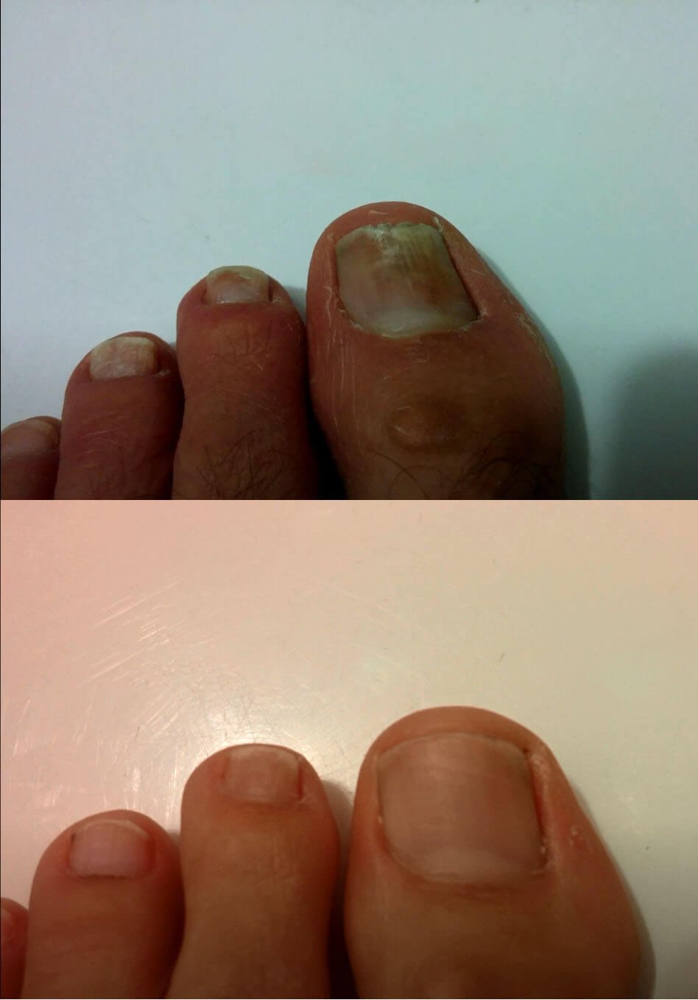
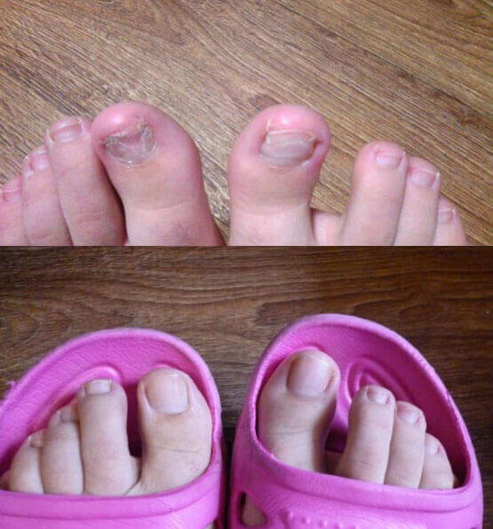

ДЕЙСТВИТЕЛНАТА ПРИЧИНА ЗА ПАПИЛОМА: ГЪБИЧКИ!
АКО ИМАТЕ ПАПИЛОМ НА ВРАТА, ПОД МИШНИЦАТА СИ ИЛИ ДРУГДА, ОЗНАЧАВА, ЧЕ МИКРООРГАНИЗМИ НА ГЪБИЧКИ ВИ ИЗЯДАТ
ВЪТРЕ!
Ако имате папиломи или брадавици по кожата си, това означава, че във вътрешните ви органи се е настанила колония от смъртоносни гъбички, които постепенно разрушават тъканите им.
Според статистиката повече от милиард души страдат от гъбични инфекции. Най-точната диагноза се основава на появата на папиломи.
отговаря на вашите въпроси:
Доцент, директор на Научния център за дерматология и микология. Има повече от 20 научни статии в областта на клиничната микология.
Тя има повече от 15 години професионален опит.
Научният център по дерматология и микология откри, че гъбичните инфекции са истинската причина за папиломи в човешкото тяло. Последните изследвания показват, че са метаболитни продукти на гъбичките, които причиняват токсични заболявания и разрушават цялата телесна система. Следователно хората, заразени с гъбични микроорганизми, имат брадавици и папиломи.
Говорихме за този проблем с д-р. Мирела Петрова, директор на Научния център по дерматология и микология.
Добър ден, д-р. Петрова. Нека започна с основния въпрос: Вярно ли е, че по-голямата част от населението на БиХ страда от гъбични инфекции?
Да. Страната ни е в списъка на лидерите по гъбични заболявания. Причините за това са околната среда, бездействието на властите и ниското ниво на хигиена. Рискът от гъбична инфекция ни преследва всеки ден: на плажа, в басейна, в обществената тоалетна, в транспорта.
Според експерти от Световния фонд за борба с гъбичните инфекции около 1,7 милиона души на планетата са изправени пред сериозни усложнения поради гъбични инфекции. Гъбичките често унищожават тъкани и органи. Гъбичните инфекции причиняват смърт от рак, гангрена, астма и др. Но за лекарите се отплаща да не говорят за това. Освен че поддържат илюзията, че гъбичките трудно се лекуват – така пациентите купуват скъпи лекарства и се подлагат на безполезни процедури. В крайна сметка това е голям и печеливш бизнес.
д-р Петрова, наистина ли папиломите са универсален симптом на гъбична инфекция?
Да. Някои изследователски групи са на мнение, че храната, отделяна от гъбични микроорганизми, допринася за образуването на папиломи и брадавици по човешката кожа. Освен това, ако видим, че брадавици и папиломи едва започват да се появяват по тялото, това означава, че активно размножаващите се колонии от гъбички сега се заселват в кухините на органите. Следователно, всеки човек, страдащ от папилома, е в смъртна опасност.
Припомням, че около 60% от всички смъртни случаи, включително „естествената смърт“, са причинени само от един фактор – гъбични микроорганизми, които бавно изяждат хората отвътре.
Но гъбичките не са ли просто кожен обрив или деформация на ноктите? Как това може да причини смърт?
Всъщност е фатална грешка да се мисли, че гъбичните инфекции са само обрив по кожата или увреждане на нокътната плочка. Има голям брой различни видове гъбички, които причиняват заболявания и живеят по кожата, лигавиците, вътрешните органи и могат да имат широк спектър от последствия. Например дълбоките микози (кокцидиоидомикоза, хистоплазмоза) са изключително опасни. Те буквално унищожават тъканите, което ги кара да гният и умират. Междувременно дълбоките микози са трудни за изкореняване.
Освен това има гъбички, които живеят върху лигавицата, а не върху кожата и дори във вътрешните органи: черния дроб и белите дробове. Почти всички от тях са много опасни. Те навлизат в тялото, веднага започвайки агресивно да го унищожават. Понякога гъбичната инфекция се развива асимптоматично - докато нейният патоген се размножи в толкова голяма колония, че тялото не може да се справи с нея. Такъв пациент постепенно губи имунната си система, развива алергии, чернодробна цироза, атеросклероза и дори рак.
В същото време мога да кажа със сигурност, че по-голямата част от населението е заразено с гъбична инфекция. Проблемът е, че някои от тях са много трудни за диагностициране. И когато последствията от инфекцията са ясни, лекарите се опитват да ги скрият. При аутопсията наличието на гъбични микроорганизми трябва да се потвърди със специални тестове, но лекарите не искат да отделят времето си на това.
Един от универсалните симптоми, които позволяват точна диагноза на гъбична инфекция, са папиломи и брадавици .
Можете ли да дадете конкретни примери за подобни гъбични инфекции?
Мога да ви разкажа за хиляди случаи, с които съм се сблъсквал през дългогодишния си опит. Но ще се съсредоточа върху тези, които най-добре показват риска от инфекция.
1. Аспергилозата е тежка микоза, засягаща белите дробове и, в особено тежки случаи, сърцето, черния дроб, бъбреците и мозъка, водеща до временна смърт. Лекарите все още слабо диагностицират това заболяване и често го бъркат с други. Белодробна аспергилоза, която по време на операцията премина в тежка бактериална деструктивна пневмония, е открита само при един пациент. В резултат на това пациентът е починал, без дори да дойде в съзнание.
2. Онихомикоза (атлетично стъпало) е една от най-честите микози. Където и да ходят боси, има опасност от заразяване. Спорите на гъбичките могат да понасят както високи (до 100 ° C), така и ниски (до минус 50-60 ° C) температури и могат да останат активни в продължение на месеци. Тъй като пациентът потърсил помощ твърде късно, се наложила ампутация.
3. Този пациент се оплакваше от сърбеж, дълго време беше сигурен, че скалпът му е сух и че е избрал грешен шампоан. Микроскопското изследване на скалпа в мокър препарат с калиев хидроксид показа, че върху скалпа присъства гъбата Trichophyton tonsurans. При палпация се открива голяма мека маса (крион) с изразена възпалителна реакция. Тъй като пациентът потърсил помощ твърде късно, керионът причинил алопеция - скалпът на тази част на главата не можел да бъде възстановен дори с трансплантация на коса.
Как е възможно да се провери дали човек е заразен с патогенни гъбички? За съжаление няма метод, който да диагностицира наличието на гъбични микроорганизми в човешкото тяло със 100% сигурност. Отчасти защото има много видове гъби, които причиняват заболявания (повече от 2000 известни вида), и отчасти защото са трудни за откриване. Пълният преглед, който може да се извърши в няколко здравни заведения в БиХ, е много скъпа процедура.
Първите симптоми на гъбична инфекция са:
- черни точки и комедони
- папиломи и брадавици
- лош дъх
- алергии (обрив, сълзене на очите и хрема)
- поява на оплешивяване на части от главата
- сърбеж и зачервяване на кожата
- чести настинки, възпалено гърло, запушен нос
- хронична умора (без значение какво правите, бързо се уморявате)
- чести главоболия
- запек или диария
- мускули и болки в ставите
- раздразнителност, безсъние и загуба на апетит
- тъмни кръгове, торбички под очите
Ако забележите някой от тези симптоми, има 73% шанс да имате гъбична инфекция. Трябва да започнете лечението възможно най-скоро!
Как можем да се предпазим и да се отървем от гъбични инфекции?
Предвид наличието на продукти за борба с гъбичните инфекции, ситуацията в момента е доста проблематична. Разбира се, има много специфични продукти, които премахват външните симптоми. Има продукти, които са повече или по-малко ефективни срещу някои видове. Основният проблем обаче е, че продуктите засягат само един специфичен вид гъбички, които причиняват заболяването, докато всеки човек носи поне 7-8 вида. Приемането на няколко продукта едновременно предизвиква усложнения (чак до токсична кома).
Днес има само едно решение за премахване на гъбични микроорганизми. Това е продукт, наречен ГЕЛ , който е постигнал отлични резултати в клинични проучвания.
Какво е специалното за продукта ГЕЛ? По какво се различава от другите противогъбични продукти?
През 2008 г. химическа лаборатория в Женева започна изследвания за лечение на рак на кожата, причинен от дълбоки микози. В това проучване се наблюдава един страничен ефект, който изненада учените. След използване на един от тестовите продукти, 87% от пациентите, участвали в клиничното изпитване, подобриха здравето си, папиломи и брадавици изчезнаха, а кожата беше почистена. За съжаление работата беше спряна поради последвалата икономическа криза. Въпреки това, през 2017 г. ГЕЛ беше тестван и произведен на базата на същия тестов продукт.
Както вече споменахме, днес това е единственият продукт в света с подобен ефект, поради което е толкова популярен сред представители на международни фармацевтични вериги и дерматологични клиники. Казах ви, че е почти невъзможно да се определи с кои гъбички е заразен човек. Препаратът ГЕЛ има комплексно действие, не само действа върху горните слоеве на кожата, но и прониква по-дълбоко в тъканите и телесните течности, има кумулативен ефект и унищожава всички видове гъбични инфекции. Никой друг продукт, наличен днес, не е толкова ефективен.
Освен това, това не е синтетичен продукт, а напълно натурален продукт, който елиминира риска от алергични реакции, отоци и други усложнения.
ВАЖНО!
Центърът по дерматология и микология стартира специална кампания, в която този продукт може да бъде закупен
с 50% отстъпка!
Тази оферта е ограничена във времето от
-
към днешна дата (включително). Сертификат
ГЕЛ
, като попълните
ФОРМУЛЯР ЗА ПОРЪЧКА
с 50% отстъпка!
Ефикасността на GEL е определена в рандомизирано, плацебо-контролирано, двойно-сляпо проучване. Експерименталната група (100 души), получила препарата, отчита следните резултати:
- отстраняване на гъбични инфекции от тялото: 99%
- пълно лечение на възпаление: 65%
- адресиране на чупливост и разслояване на нокътната плочка : 67%
- изчезване на зачервяване и обрив: 71%
- изчезване на черни точки и комедони: 83%
- изчезване на брадавици и папиломи: 79%
< br> 2. Не предизвиква странични ефекти, включително алергични реакции.
3. ГЕЛ в момента е признат за водещ продукт в своята област
Този продукт е сертифициран не само в БиХ, но и в страните от Европейския съюз. Клиничните изследвания в ЕС са проведени от университета Декарт в Париж. Френските ни колеги лекуваха повече пациенти, отколкото ние при първия преглед в България. В момента клиничните изпитвания в Америка и Япония приключват. Азиатските страни проявяват голям интерес към формулата на този продукт. Всички тестове, без изключение, показаха невероятната ефективност на този продукт.
Мисля, че нашите читатели се чудят откъде мога да взема гел? Има ли програми за отстъпки за български граждани?
Под мое ръководство експерти от Научния център по дерматология и микология създадоха дистрибуторски център с ограничено предлагане на продукти. Както е посочено в статията, гел вече е наличен за закупуване на промоционална цена от -50%. Офертата обаче е за ограничен период от време. А самият продукт се предлага само в определени региони на страната.
За да закупите гел, просто изпратете заявка чрез нашия формуляр за поръчка , като посочите вашето име и телефонен номер, така че че операторът може да се свърже с вас. Ако бутонът за поръчка е активиран, това означава, че продуктът за вашия регион все още е наличен в центъра за разпространение. Аз лично гарантирам, че всеки, който подаде заявка чрез формата за поръчка, ще получи продукта.
Др. Петрова, какво бихте искали да кажете на нашите читатели, преди да завършим това интервю?
Всичко, което искам да кажа, е следното: Грижете се за здравето си. Може дори да не сте наясно с това, но шансовете да получите гъбична инфекция са 60-65%. Колония от гъбички може да се установи навсякъде - в кръвта, червата, белите дробове, сърцето, мозъка. В резултат на това се появяват много проблеми, които могат да съкратят живота с 15-25 години. Да не говорим за проблема с внезапната смърт, която обикновено настъпва в резултат на дълбока микозна инфекция. Не чакайте, докато стане твърде късно - започнете лечението веднага.



